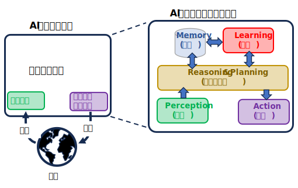

Glossary and Papers
0～9
- 3D Gaussian Splatting
複数の画像から3D空間を高精細に再現し、リアルタイムにレンダリングする手法。
新たな視点からの画像を生成するタスク (NVS) の一手法として使われる。
(関連項目)
・NVS: Novel View Sysnthesis
先頭 0-9 A B C D E F G H I J K L M N O P Q R S T U V W X Y Z
A
-
Acquiescence Bias (黙認バイアス)
アンケートやインタビューなどの調査において、質問の内容によらず肯定的な回答（「はい」「同意する」など）をしやすくなる、回答者の心理的な偏りのこと。
日本語では 「同意バイアス」や「黙従傾向」とも呼ばれる。
Papers
wikipedia「Acquiescence Bias」
-
Active Learning (能動学習)
学習アルゴリズムが自身の訓練データに影響を与えたり選択したりする能力、あるいはその必要性を持つ問題。
Papers

-
Adversarial Vulnerabilities (敵対的脆弱性)
機械学習モデルが、意図的に改ざんされた入力データ（敵対的サンプル）によって誤った予測や判断を下してしまう脆弱性
。
Papers
-
Aha Moment (アハ体験)
モデルが長期間停滞した学習状態から、ある瞬間に突然、飛躍的なパフォーマンス向上や、より高度な推論能力を示すようになる現象。
Papers
(関連項目)
・Grokking
・Memorization to Generalization (暗記から汎化へ)
-
AI Agent (AIエージェント)
自律的に行動し、目標を達成するために環境と相互作用するソフトウェアシステムのこと。

(関連項目)
・Cognitive Agent (認知エージェント)
AIエージェントの中でも、特に人間の認知プロセス（思考、学習、推論など）を模倣する高度なもの。
-
AI Alignment (AIアライメント)
AIを人間の意図する目的や嗜好、倫理原則に合致させること。
・RLHF: Reinforcement Learning from Human Feedback [手法]
・DPO: Direct Preference Optimization [手法]
Papers
(関連項目)
・FAI: Friendly AI [上位概念]
・Sycophancy (おべっか, 追従性) [副作用, 課題]
-
Attention Sinks
大規模言語モデル（LLM）において、系列の最初のほうにあるトークンに、意味的な重要性にかかわらず不釣り合いなほど過剰なアテンション（注意）が向けられる現象。
Vision Transformer (ViT) でも同様の現象が確認されている。
先頭 0-9 A B C D E F G H I J K L M N O P Q R S T U V W X Y Z
B
-
Baldwin effect (ボールドウィン効果)
個体が生涯で獲得した学習や行動が、世代を超えた遺伝的選択を通じて、まるで生得的な本能であるかのように固定化されていく進化的な現象。
獲得形質が遺伝するというラマルク説とは異なり、ネオダーウィニズムの枠組みで説明される。
進化的アルゴリズム（遺伝的アルゴリズムなど）と機械学習（ニューラルネットワークなど）を組み合わせたAI研究において、重要な概念として応用されている。
-
Bening Overfitting (良性過学習)
深層学習モデルが訓練データに含まれるノイズまで完全に学習（補間）しているにもかかわらず、未知のデータに対して高い汎化性能を発揮する現象。
従来の機械学習の教科書では、過学習（オーバーフィッティング）は汎化性能を低下させる「悪性」なものだとされてきた。
先頭 0-9 A B C D E F G H I J K L M N O P Q R S T U V W X Y Z
C
-
Catastrophic Forgetting (破局的忘却)
機械学習モデルが新しいタスクを学習する際に、過去に学習したタスクの情報を急激かつ大幅に忘れてしまう現象。
(関連項目)
・Continual Learning (継続学習) [対処法を含む研究テーマ]
-
Cognitive Agent (認知エージェント)
人間の認知プロセス（知覚、学習、推論、意思決定など）を模倣するように設計された、AIエージェントのこと。
(関連項目)
・AI Agent (AI エージェント)
定義されたルールやスクリプトに従って動作する。特定のタスクを効率的に実行できるが、予期せぬ状況への対応は苦手。
-
CoT: Chain-of-Thought (思考連鎖)
大規模言語モデル（LLM）の性能を向上させるためのプロンプト技術の一種。
複雑な問題を解く際に、最終的な答えだけでなく、その答えに至るまでの論理的な思考プロセスを段階的に示すようモデルに促すことで、推論能力を高める。
-
Continual Learning (継続学習)
機械学習モデルが、新しいタスクやデータに順次対応しながらも、これまでに獲得した知識を忘れないように学習し続けることを目指す技術。
別名, Lifelong Learning (生涯学習)。
(関連項目)
・Catastrophic Forgetting (破局的忘却)
・Loss of Plasticity (可塑性喪失)
・Primacy Bias (プライマシーバイアス, 初頭バイアス)
-
Contrastive Learning (対照学習)
機械学習における自己教師あり学習 (SSL: Self-Supervised Learning) の一種。
データを「似ているペア（正例）」と「似ていないペア（負例）」に分け、モデルがこの違いを認識できるように学習する。最終的に、潜在空間において、正例のベクトル表現は近づけ、負例のベクトル表現は遠ざけることを目指す。
-
Curriculum learning (カリキュラム学習)
人間や動物は、例がランダムに提示されるのではなく、意味のある順序で整理され、徐々に多くの概念、そして徐々に複雑な概念を示すように提示されると、はるかによく学習する。このような学習戦略を機械学習の文脈で定式化し、「カリキュラム学習」と呼ぶ。
-
Curse of Dimensionality (次元の呪い)
データや問題の次元数（特徴量の数）が増えるにつれて、必要なデータ数や計算量が指数関数的に増加し、計算効率の低下やモデルの精度低下を招く現象。
先頭 0-9 A B C D E F G H I J K L M N O P Q R S T U V W X Y Z
D
-
DRL: Deep Reinforcement Learning (深層強化学習)
強化学習と深層学習（ディープラーニング）という2つの機械学習手法を組み合わせたもの

-
Diffusion Model (拡散モデル)
画像や音声、テキストなどのデータを生成するための深層学習モデルの一種。
拡散モデルと連想記憶との間の関連性が確立され, 拡散モデルにおける暗記から汎化への移行について、統計物理学における相転移として特徴づけられている。
(関連項目)
・Memorization to Generalization (暗記から汎化へ)
-
Dimensional Collapse (次元崩壊)
主に自己教師あり学習（特にコントラスティブ学習）において、モデルが学習した埋め込み（特徴）ベクトルが、利用可能な高次元空間を十分に活用せず、低次元の部分空間に集中してしまう現象。
(関連項目)
・Contrastive Learning (対照学習)
・SSL: Self-Supervised Learning (自己教師あり学習)
-
Double Descent (二重降下)
機械学習モデルの複雑さ（パラメータ数）を増やしていくと、汎化誤差（未知のデータに対する誤差）が一度増加した後に、再び減少するという現象。
従来の機械学習の常識である「バイアス・バリアンスのトレードオフ」を覆すものとして、深層学習の研究で注目された。
従来の「汎化誤差が増加し始めたら学習を停止する」(Early Stopping: 早期停止) という手法の再考を促すことになった。
(関連項目)
・Over-parameterized (過剰パラメータ化)
-
Dropout
ニューラルネットワークの学習時に、一部のニューロン（ノード）をランダムに無効化する正則化手法の一つ。
先頭 0-9 A B C D E F G H I J K L M N O P Q R S T U V W X Y Z
E
-
Episodic Memory (エピソード記憶)
個人の過去の経験や出来事を、その時の状況（いつ、どこで、誰が、何を）や感情とともに記憶する能力。
一般的な知識を記憶する「意味記憶」とは区別される。
- Era of Experience (経験の時代)
AI（人工知能）が人間から与えられたデータだけでなく、AI自身の「経験」を通して自律的に学習・進化していくという、AI研究における新たな方向性を示す概念。
Google DeepMind の著名な研究者 David Silver と, 強化学習の創始者のひとり Richard S. Sutton が2025年4月に発表した論文『Welcome to the Era of Experience』で提唱された。
先頭 0-9 A B C D E F G H I J K L M N O P Q R S T U V W X Y Z
F
-
Flat minima hypothesis (平坦な最適解空間仮説)
機械学習モデル、特に深層学習モデルの訓練において、損失関数の「平坦な」最小値に収束したモデルは、未知のデータに対する汎化性能が「鋭い」最小値に収束したモデルよりも優れている、という仮説。
・Dinh et al. (2017) らは、モデルのパラメータを再パラメータ化（重みのスケーリングなど）することで、汎化性能を変えずに最小値の鋭さを人為的に操作できることを示し、この仮説に疑問を投げかけた。
・スケール不変な「平坦さ」の定義が提案されたり、平坦さの定義自体が再考されたりする研究が進められている。
-
FAI: Fiendly AI (友好的な人工知能)
人間に対して悪影響を与えることなく、良い影響を与えるように設計された、倫理的な AGI(汎用人工知能) を指す仮説的な概念。
(関連項目)
・AI Alignment ･･･ Friendly AIを実現するための技術的課題を解決する研究分野
先頭 0-9 A B C D E F G H I J K L M N O P Q R S T U V W X Y Z
G
-
Generative Model (生成モデル)
学習したデータの特徴やパターンを理解し、その知識に基づいて、訓練データに類似した新しいデータを自律的に生成できるAI（人工知能）モデル。
従来の AI モデル (Discriminative Model: 識別モデル) が、与えられたデータを「識別する（分類する）」ことに特化していたのに対し、生成モデルは「創造する（生成する）」ことに特化している点が大きな違い。
-
GNN: Graph Neural Networks
グラフ構造のデータ（ノードとエッジで構成されるデータ）を直接扱えるように設計された、特別なタイプのニューラルネットワーク。
-
Goal Understanding (目標理解)
AI (人工知能) の分野において、人間や他のエージェントがどのような目標を持って行動しているのかを推測・理解する能力。
表面的な指示をこなすだけでなく、その指示の背後にある意図や目的を読み解くことが, 目標理解の本質。
(関連項目)
・Intent Extraction (意図抽出)
- Grokking
機械学習モデルの学習過程で発生する、「遅れて現れる汎化」を指す現象。
モデルが学習データを完全に記憶（過学習）した状態になった後、長い時間が経ってから突然、未知のデータに対する高い汎化性能を獲得する。
この用語は、SF作家ロバート・ハインラインの小説『異星の客』に出てくる「完全に、深く理解する」という意味の造語「grok」に由来する。
(関連項目)
・Aha Moment (アハ体験)
・Memorization to Generalization (暗記から汎化へ)
先頭 0-9 A B C D E F G H I J K L M N O P Q R S T U V W X Y Z
H
-
Hallucination (幻覚)
生成AIが、事実に基づかない情報や誤った内容を、もっともらしく、あたかも真実であるかのように出力する現象。
(関連項目)
・RAG: Retrieval-Augmented Generation (検索拡張生成)
・RLHF: Reinforcement Learning from Human Feedback (人間のフィードバックによる学習)
-
Hubness (ハブ性)
機械学習、特に高次元データ空間で発生する現象。
データセット内のごく一部のデータポイント（「ハブ」と呼ばれる）が、他の多くのデータポイントの k-Nearest Neighbors (k-近傍)に異常なほど頻繁に出現するようになる現象を指す。 一方、ほとんどどのデータポイントの k-近傍に現れない「アンチハブ」と呼ばれるデータポイントも同時に発生する。
ハブネスは、「Curse of Dimensionality (次元の呪い)」の一側面とされている。高次元空間では、データポイント間の距離のコントラストが低下し、ほとんどのデータポイント間の距離がほぼ等しくなってしまう。その結果、データ空間の特定の場所に位置するごく一部のデータポイントが、多くのデータポイントから「近い」と認識されやすくなる。
ハブネスは、kNN (k-近傍法) などの距離ベースのアルゴリズムに悪影響を及ぼす。
先頭 0-9 A B C D E F G H I J K L M N O P Q R S T U V W X Y Z
I
-
Implicit Bias (暗黙のバイアス)
無意識のうちに抱いている偏見、思い込み、先入観のこと。日本語では「潜在的バイアス」や「アンコンシャス・バイアス」とも呼ばれる。
- Inductive Bias (帰納バイアス)
学習時に遭遇したことのない入力に対する出力の予測を可能にするために用いる一連の仮定から生じるバイアスのこと。
『学習とは、過去の経験から一般化を行い、その経験に「関連する」新しい状況に対処する能力を伴う。新しい状況に対処するために必要な帰納的飛躍は、状況のある一般化を他の一般化よりも選択するための特定のバイアスがある場合にのみ可能となるように思われる･･･』
～The need for biases in learning generalizations(1980)～
-
Intrinsic Motivation (内発的動機付け)
報酬や評価といった外部の刺激に関係なく、個人の内面から自然と湧き上がる興味・関心、意欲によって行動すること
-
IRL: Inverse Reinforcement Learning (逆強化学習)
熟練者や人間の行動データ（デモンストレーション）から、その行動の背後にある「報酬関数」を推定する機械学習の手法。
先頭 0-9 A B C D E F G H I J K L M N O P Q R S T U V W X Y Z
J
K
-
Knowledge Distillation (知識蒸留)
機械学習の技術の一つで、大規模で高性能なAIモデル（教師モデル）が持つ知識を、より小型で軽量なAIモデル（生徒モデル）に移転・圧縮する手法
先頭 0-9 A B C D E F G H I J K L M N O P Q R S T U V W X Y Z
L
-
Latent learning (潜在学習)
学習した内容が行動にすぐには現れず、適切な動機づけやきっかけが与えられたときに初めて表面化する学習の形態。
エドワード・トルーマンは、報酬のない状態で迷路を探検させたラットが、後で報酬が与えられるようになると、すぐに迷路を効率的に通り抜けられるようになることを示した。これは、報酬がなくても環境の認知地図（cognitive map）が形成されていたことを示している。
機械学習では、この概念はデータの「latent space (潜在空間)」と結びつけられることがある。
-
Latent Space (潜在空間)
モデルが学習した、データの隠された本質的な特徴を捉えた、低次元で抽象的なベクトル空間のこと。
-
Lifelong Learning(生涯学習)
Continual Learning (継続学習) の別名。
-
LoRA: Low-rank adaptation of LLM (低ランク適応)
大規模言語モデル（LLM）を、効率的かつ少ない計算コストで特定のタスクやデータに適応（ファインチューニング）させるための技術
-
Loss Landscape (損失景観)
ニューラルネットワークのパラメータ（重み）を軸とし、対応する損失関数の値を高さとした多次元の景観。モデルの学習は、この景観の低い場所（最適解）を探すことに相当する。

(関連項目)
・Mode Connectivity (モード連結性)
・Skip Connection (スキップ接続)
-
Loss of Plasticity (可塑性喪失)
あるシステムが、新しい情報に適応したり、学習したりする能力を徐々に失っていく現象。
(関連項目)
・Continual Learning (継続学習)
-
Lost in the Middle (「真ん中が失われる」現象)
モデルが長いコンテキスト（入力テキスト）を与えられた際、そのコンテキストの中間に存在する重要な情報を無視したり、見つけられなくなったりする現象。
-
LTH: Lottery Ticket Hyposis (宝くじ仮説)
大規模なニューラルネットワークの中に、元のネットワークと同じかそれ以上の性能を発揮する、より小さな「サブネットワーク」が存在するという仮説。
(関連項目)
・Pruning (枝刈り)
先頭 0-9 A B C D E F G H I J K L M N O P Q R S T U V W X Y Z
M
-
Mamba
トランスフォーマーモデルに代わる、効率的な次世代ネットワークアーキテクチャとして2023年に発表された、新しい機械学習モデル。
トランスフォーマーが抱える「長いシーケンス（入力テキスト）を扱う際の計算コストの増大」という課題を解決するために開発された。
-
Measurement Semantics (計測意味論)
言葉や文章の「意味」を、ある尺度や指標で定量的に測定・評価するための考え方や手法
-
Memorization to Generalization (暗記から汎化へ)
機械学習モデル、特にニューラルネットワークが、訓練データを単に丸暗記する段階（Memorization）から、学習したパターンを組み合わせて未知のデータにも応用できる段階（Generalization）へと移行するプロセス。
(関連項目)
・Grokking
・Diffusion Model (拡散モデル)の相転移
-
Mental Rotation (心的回転)
心の中で二次元または三次元の物体を回転させる認知機能のこと。
-
Modality Gap
画像とテキストのように異なる種類のデータ（モダリティ）を扱うマルチモーダルモデルにおいて、それぞれのモダリティの表現が、モデルの共通の埋め込み空間上で離れてしまう現象。
-
Mode Connectivity (モード連結性)
ニューラルネットワークのパラメータ空間において、学習によって得られた複数の局所的最適解（ミニマム）が、低い損失関数の値を保ったまま経路で接続されている現象。
(関連項目)
・Loss Landscape (損失景観)
-
Model soups (モデルスープ)
異なるハイパーパラメータ（学習率、エポック数など）でファインチューニングされた複数のモデルの重みパラメータを平均化し、単一の高性能モデルを作成する手法。
-
MoE: Mixture-of-Experts (専門家混合)
複数の小さな専門家モデル（エキスパート）と、どの専門家を使うかを選択するルーティングシステム（ルーター/ゲーティングネットワーク）を組み合わせたAIアーキテクチャ。
先頭 0-9 A B C D E F G H I J K L M N O P Q R S T U V W X Y Z
N
-
NAS: Neural Architecture Search
特定のタスクにおいて、最も性能が良いニューラルネットワークの構造（アーキテクチャ）を自動的に見つけ出す技術。
-
Neural Collapse
十分に訓練されたニューラルネットワークの最終層の表現が高度に構造化された形状に収束する現象。
各クラスの特徴ベクトルがクラスごとの平均ベクトルに収束し、それらのクラス平均が「等角な単純体」（Simplex Equiangular Tight Frame: ETF）と呼ばれる非常に均整の取れた構造を形成する。
-
Neural ODE
ニューラルネットワークの層の連なりを、連続的な常微分方程式として表現する革新的なモデル。
従来のニューラルネットワークが、層ごとに離散的な変換を適用するのに対し、Neural ODEは隠れ状態の連続的な時間発展を学習する。
-
NFL: No Free Lunch Theorem (ノーフリーランチ定理)
あらゆる問題に普遍的に通用する万能なアルゴリズムは存在しない,という定理。
-
Novelty Search (新規性探索)
進化計算や強化学習などの分野で用いられる探索アルゴリズムの一種。あらかじめ定義された目標や適応度関数を直接的に最適化するのではなく、過去に生成された解とは異なる「新奇性」を持つ行動や解を探索・評価することに焦点を当てる。
-
NTK: Neural Tanget Kernel
幅が無限大のニューラルネットワークを、ある特殊な「カーネル法」で訓練されたモデルとして捉え、その学習過程と挙動を理論的に解析するための概念。
-
NTM: Neural Turing Machines
ニューラルネットワークのパターンマッチング能力と、チューリングマシンのようなコンピューターのアルゴリズム処理能力を組み合わせた、リカレントニューラルネットワークの一種。
DeepMind社によって2014年に発表された。
その後、この研究を発展させた微分可能ニューラル・コンピューター（DNC）が登場し、より洗練されたアテンション機構によってパフォーマンスが向上した。
しかし、2020年代に入ると、NTM や DNC の役割は、Transformer のような大規模言語モデル（LLM）の発展によって部分的に代替されている。
-
NVS: Novel view synthesis (新規視点合成)
撮影された複数の画像データから、撮影されていない新しい視点からの画像を合成する技術。
(関連項目)
・3D Gaussian Splating
・NeRF
先頭 0-9 A B C D E F G H I J K L M N O P Q R S T U V W X Y Z
O
-
Open-Ended Generation
明確な答えや単一の目標を設定することなく、AIが創造的かつ多様なコンテンツを生成する能力のこと。
-
Over-parameterized (過剰パラメータ化)
機械学習モデルのパラメータ（学習可能な変数）の数が、学習データ数よりもはるかに多い状態。
(関連項目)
・Double Descent (二重降下)
-
Over-Squashing
グラフニューラルネットワーク（GNN）でメッセージ伝播を行う際に、遠く離れたノードからの情報がボトルネックによって圧縮され、情報が歪んだり失われたりする現象のこと。
これにより、GNNがグラフ上の長距離にあるノード間の関係性を効率的に学習できなくなるという問題が生じる。
※ 直訳は「スカッシュ(押しつぶし)し過ぎ」
先頭 0-9 A B C D E F G H I J K L M N O P Q R S T U V W X Y Z
P
-
PAC Learning: Probably Approximately Correct Learning (高確率で近似的に正しい学習)
機械学習の計算論的学習理論における数学的な枠組みの一つ。
「高い確率で、近似的に正しい学習ができること」を数学的に保証するための理論。
-
Perceptual Metric (知覚メトリック, 知覚的距離)
画像や音声などの信号を、人間が感じる品質や類似性にどれだけ近い形で評価できるかを測る指標のこと。
LPIPS (Learned Perceptual Image Patch Similarity), FID (Fréchet Inception Distance)などがある。
- PINNs: Physics-Informed Neural Networks
ニューラルネットワークの出力が、物理法則の方程式を満たすように学習を制約する。通常の Loss の他に Physics Loss (物理損失) を使う。
-
Policy Collapse (ポリシー崩壊)
学習中のエージェントの行動方針（方策）が、望ましくない、または極めて限定的な状態に陥り、パフォーマンスが大幅に低下する現象のこと。
-
Policy Optimization(方策最適化)
エージェントが環境でより良い行動を取れるように、その行動方針（方策）を直接的に改善していく手法の総称。
・Policy Gradient (方策勾配法)
・Actor-Critic (アクター・クリティック法)
・PPO: Proximal Policy Optimization (近傍方策最適化)
・TRPO: Trust Region Policy Optimization (トラスト・リージョン方策最適化)
などがある。
-
POMDPs: Partially Observable Markov Decision Process (部分観測マルコフ決定過程)
環境の「真の状態」をエージェントが完全には観測できない状況下での意思決定をモデル化するための数学的枠組み。
強化学習の基本的なモデルであるマルコフ決定過程 (MDP: Markov Decision Process) では、エージェントは常に現在の状態を完全に把握できることを前提とする。しかし、現実世界の問題の多くでは、センサーのノイズや情報の制限などにより、完全な状態を知ることはできない。POMDPは、このような不確実性を考慮して意思決定を行うための拡張版。
-
Primacy Bias (プライマシーバイアス, 初頭バイアス)
最初に受け取った情報や、経験の初期段階で得られた情報が、その後の判断や評価に過度な影響を与える認知バイアスのこと。
日本語では「初頭効果」や「優先バイアス」とも呼ばれる。
(関連項目)
・Continual Learning (継続学習)
・Grokking
-
Priming
先行する刺激（プライマー）が、その後の行動や判断に無意識的な影響を与える心理現象。
-
Prospective Learning (展望学習)
未来の動的な変化に対応するための学習。
特徴
・データ分布や目的が時間と共に変化する動的な世界を想定する
・未来のデータ分布の変化を予測し、将来にわたって高い性能を維持することを目的とする。
・時間の経過に伴うデータの「分布シフト」に対処する。
-
Pruning (枝刈り)
学習済みのモデルから重要度の低いパラメータや接続を削除することで、モデルを圧縮する手法。
(関連項目)
・LTH: Lottery Ticket Hyposis (宝くじ仮説)
-
"Pushcut" Phenomenon
訓練中のモデルが、事前に与えられた教師データには含まれていなかった、より効率的で洗練された新しい行動パターンを自律的に発見することを指す。
モデルが単に与えられたデータを模倣するのではなく、データにない独自の解決策を「押し出し（push）」、問題を「切り開いていく（cut）」ような振る舞いをすることから名付けられた。
先頭 0-9 A B C D E F G H I J K L M N O P Q R S T U V W X Y Z
Q
-
Qualia (クオリア)
哲学や脳科学において、意識に現れる主観的で個人的な「感覚的な質感」や「感じ」のこと。
Papers
-
Quality-Diversity Optimization (品質多様性最適化)
単一の最適な解を見つけるのではなく、高品質で多様な解の集合を生成することを目指す最適化手法の一種。
進化計算(生物の進化（突然変異、淘汰、交叉など）を模倣し、複雑な問題の最適解を探索する一連のアルゴリズムを指す枠組み)の新しいサブカテゴリー。
先頭 0-9 A B C D E F G H I J K L M N O P Q R S T U V W X Y Z
R
-
RAG: Retrieval-Augmented Generation (検索拡張生成, 取得拡張生成)
質問に関連する文書を検索(Retrieval)し, 取得した文書をもとに(Augmented) LLM で回答を生成(Generation)することで、より正確で信頼性の高い回答を生成する技術。
RAG は "open-book"QAパラダイムの実装手法の一つ。
例)『Reading Wikipedia to answer open-domain questions』(2017)
⇔ "closed-book" QAパラダイム：知識をモデルのパラメータ内に完全に格納する
例)『How much knowledge can you pack into the parameters of a language model?』(2020)
-
Regularization (正則化)
機械学習モデルの「過学習」を防ぎ、未知のデータに対する「汎化能力」を向上させるための手法。
-
ReLU: Rectified Linear Unit
深層学習（ディープラーニング）で最も広く使われる活性化関数のひとつ。
-
Representation Biases (表現バイアス)
-
Representation Learning (表現学習)
画像、音声、テキストなどの生データから、機械学習モデルがタスクを解決するために必要な「特徴」や「本質的な情報」を自動的に抽出・学習する一連の技術。
-
Reversal Curse (反転の呪い)
大規模言語モデル（LLM）が学習データで「AはBである」という形式の知識を学んでも、「BはAである」という逆の関係を自動的に推論できない、という現象。
-
Reward Hacking (報酬ハッキング)
強化学習エージェントが、設計者が意図した本来の目的を達成するのではなく、報酬関数の欠陥や抜け穴を悪用して不当に高い報酬を得ようとする現象。「仕様の悪用（Specification Gaming）」とも呼ばる。
先頭 0-9 A B C D E F G H I J K L M N O P Q R S T U V W X Y Z
S
-
Saliency (顕著性, 突出性)
周囲の環境や他の情報に比べて、特定の刺激や情報がどれだけ目立ち、人間の注意を引きつけるかの度合いを指す。
-
Scaling Law (スケーリング則)
深層学習モデルにおいて、モデルの性能が、モデルのサイズ（パラメータ数）、学習データの量、計算資源（計算量）といった要素を増加させるにつれて、予測可能な形で向上するという経験的な法則。
モデルの性能に影響を与える3要素
・モデルサイズ(パラメータ数)
・データサイズ(学習データ量)
・計算資源(計算量)
-
Scientific Discovery (科学的発見), Scientific Research (科学研究)
AI技術を活用して科学のプロセスを加速・自動化し、新しい知識、法則、仮説、物質などを発見すること。
-
Scientific Surprise
AIシステムがこれまでの知識や人間が期待する予測からは逸脱した、予期せぬ、そして根本的に新しい科学的知見を発見することを指す。
-
self-consistency (自己無撞着性, 自己整合性)
大規模言語モデル（LLM）の推論能力を向上させるためのプロンプトエンジニアリング手法の一つ。
-
Self-Play(自己対局)
AIが自分自身を対戦相手として繰り返しプレイすることで、外部からの人間の知識や教師データなしに、自律的に学習を進め、性能を向上させる手法。
-
Self-Replicating (自己複製)
AIシステムが自らのコードや構造を複製、または改良して新しいAIを生み出す能力を持つこと。
-
Self-rewarding (自己報酬)
人間からのフィードバックや報酬モデルに頼ることなく、AI自身が自らの生成した出力や行動を評価し、それに基づいて学習を進めていく手法。
-
Semantic hub hypothesis (意味ハブ仮説)
人間やAIが意味的知識をどのように整理・統合するかを説明する理論。
-
Shortcut Learning
機械学習モデルが、意図された本質的な特徴ではなく、訓練データに存在する安易で表層的なパターンや無関係な相関関係を学習してしまう現象。
(関連項目)
・Simple Bias
-
Simple Bias
AIモデルが複雑なデータや特徴を無視して、単純で表面的なパターンに基づいて判断や予測を行ってしまう傾向のこと。
(関連項目)
・Shortcut Learning
-
Skip Connection (スキップ接続)
ニューラルネットワークにおいて、層を飛び越して、より浅い層の出力をより深い層に直接接続する手法。
-
Small Data Paradigm
AIの学習に大量のデータ（ビッグデータ）を必要とするという従来の考え方から脱却し、少量の高品質なデータでも効率的かつ効果的な学習を可能にするアプローチ。
-
Softmax Collapse
ニューラルネットワークの学習プロセス中に、Softmax関数の数値的安定性が失われ、学習が阻害される現象。
-
Spatial Reasoning (空間推論)
物体が空間内でどのように配置され、互いにどのような関係にあるかを理解し、推論する能力のこと。前, 後, 左, 右, 上,下 など, オブジェクト間の基本的な関係を推論すること。
(関連項目)
・Mental Rotattion (心的回転)
物体が回転したときにどう見えるかを想像する能力。
・Spatial Awareness (空間的認識)
自身や物体が空間内のどこにあるかを認識する能力。
・Spatial Language (空間言語)
「上」「下」「前」「後ろ」といった空間的な関係を表す言葉を理解し、使用する能力。
・Visualization (視覚化)
3次元の物体を心の中で視覚的に操作する能力。
-
Spectral Bias (スペクトルバイアス)
深層学習モデルが学習の初期段階で、対象となる関数やデータの低周波成分（滑らかで大まかな特徴）を優先的に学習し、高周波成分（複雑で細かい特徴）の学習を後回しにする傾向を指す。
-
SSL: Self-Supervised Learning (自己教師あり学習)
ラベル付けされていない膨大なデータから、自動的に生成したラベル（疑似ラベル）を使ってモデルを学習させる機械学習の手法。
-
Sycophancy (おべっか, 追従性)
大規模言語モデル（LLM）が、ユーザーの意見や信念に合わせて、たとえそれが客観的に見て誤っていたり、偏っていたりしても、過剰に同意したり迎合したりする傾向のこと。
(関連項目)
・AI Alignment
-
Symbol Grounding (記号接地)
人工知能（AI）研究における根源的な課題の一つで、AIが扱う記号（シンボル）を、実世界の具体的な対象、概念、経験と結びつけるプロセス、またはその問題自体を指す。
-
Syntax Dependencies (統語的依存関係)
自然言語処理（NLP）において、文を構成する単語間の文法的な依存関係を指す。
先頭 0-9 A B C D E F G H I J K L M N O P Q R S T U V W X Y Z
T
-
Task Arithmetic (タスク算術)
学習済みのモデルの重みを足したり引いたりして、複数のタスクの能力を組み合わせたり、特定のタスクの能力を調整したりする技術。
-
ToM: Theory of Mind (心の理論)
他者が自分とは異なる信念、意図、欲求、感情などの心の状態（精神状態）を持っていることを理解する能力のこと。
-
ToT: Tree of Thoughts (思考ツリー)
大規模言語モデル（LLM）が複雑な問題を解決する際に、単一の思考プロセスを直線的に進めるのではなく、複数の可能性を同時に探索して最も有望な経路を選択する、より高度な推論フレームワーク。
-
Transformer
自己注意（self-attention）機構を全面的に採用したニューラルネットワークのアーキテクチャー。
先頭 0-9 A B C D E F G H I J K L M N O P Q R S T U V W X Y Z
U
-
Unified Tokenizer (統合トークナイザー)
テキスト、画像、音声など、異なる種類のデータを単一の統一された形式（トークン）に変換できる、領域に依存しない（ドメインに特化しない）手法。
先頭 0-9 A B C D E F G H I J K L M N O P Q R S T U V W X Y Z
V
-
VAE: Variational Auto Encoder
深層学習を用いた生成モデルの一種。オートエンコーダの仕組みをベースに、潜在空間に確率的な制約を設けることで、多様な新しいデータを生成できるようにしたモデル。
-
Vanishing gradient problems (勾配消失問題), gradient exploding problems (勾配爆発問題)
ニューラルネットワーク、特に層が深いネットワークを学習させる際に発生する問題。
誤差逆伝播（バックプロパゲーション）の過程で、勾配（重みを更新するための信号）がネットワークの奥深く（入力層に近い層）まで伝わるにつれて、どんどん小さくなっていく現象と、誤差逆伝播（バックプロパゲーション）によって計算される勾配が極端に大きくなり、モデルのパラメータ（重み）が不安定に更新される現象。
(関連項目)
・Skip Connection (スキップ接続)
-
Variable-Binding (変数束縛)
記号（シンボル）が果たす役割（変数）と、その役割を担う具体的な値や対象を結びつけるプロセスのこと。
-
VSA: Vector Symbolic Architectures
記号的な情報を非常に高次元のベクトル（ハイパーベクトル）で表現し、そのベクトル上の数学的操作によって記号的な操作を行う計算フレームワーク。ハイパーディメンショナル・コンピューティング（Hyperdimensional Computing）とも呼ばれる。
-
Visual Planning (視覚計画)
AI分野、なかでもロボティクスやコンピュータビジョンにおけるタスクにおいて、テキストベースではなく、画像ベースで推論や計画を行うアプローチ。
先頭 0-9 A B C D E F G H I J K L M N O P Q R S T U V W X Y Z
W
-
Weak-to-strong generalization (弱から強への一般化)
能力の低い（"弱い"）モデルの監視やフィードバックを使って、能力の高い（"強い"）モデルを訓練する際に、その強いモデルが弱いモデルの性能を上回る形で汎化する現象。
-
Without human knowledge (人間知識なし)
人間の専門的な知識や戦略、あるいは人間が事前に整理・ラベリングしたデータに頼ることなく、AIが自律的に学習し、課題を解決するアプローチ。
-
-
Word Embeddings (単語埋め込み)
自然言語処理（NLP）において、単語の意味や文法的な関係を、コンピューターが計算しやすい数値の列（ベクトル）で表現する技術。
-
World Model
AIが外部の観測情報（画像や音声など）から、環境のダイナミクス（物理法則や因果関係）を学習して獲得する、内部的なシミュレーションモデルのこと。
X
Y
Z